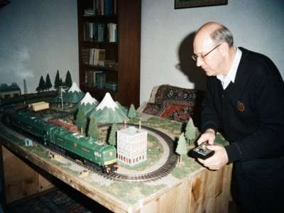

model railway H0 (1:87) · макет железной дороги
|
Здравствуйте, коллеги! Hello, colleagues! Меня зовут Николай Иванович. 36 лет я водил поезда на Кобозевском отделении, сначала помощником на ТЭ3, потом машинистом на 2ТЭ10Л. С 1994 года на пенсии. Теперь вожу поезда в маленькой комнате. My name is Nikolai Ivanovich. For 36 years I drove trains on the Kobozev division, first as assistant on the TE3, then driver of the 2TE10L. Since 1994 retired. Now I drive trains in the small room.  Макет, июль 1999 / The layout, July 1999. The 2TE10L with the passenger train, the tank train waits behind. Макет / The layout2.40 x 1.60 m, on plywood, in the room where my son lived before he went to Krasnoyarsk. It is Kobozev junction around 1975, as I remember it: the station, the depot with turntable, the tank trains going to the refinery, the passenger train to Talas, and the mountains (papier-mache, newspaper "Kobozevskaya Pravda", very strong paper).
Локомотивы / Locomotives
Where to buy in Irad?Nowhere. Really. Sometimes something at the Radiobazar in Nurzhan, from old people like me who died. Rails and kits I order through my cousin in Moscow, by post, it takes three months. If you have Soviet H0 models to sell or exchange, write me. Visitors welcomeRailwaymen, children with parents, all welcome on Saturday afternoons. Phone first. My wife makes pirozhki for guests. nik_ivanych@attelkom.net · Nurzhan, Dastgoh district |
Вы пассажир номер / You are passenger No.
18.07.1999